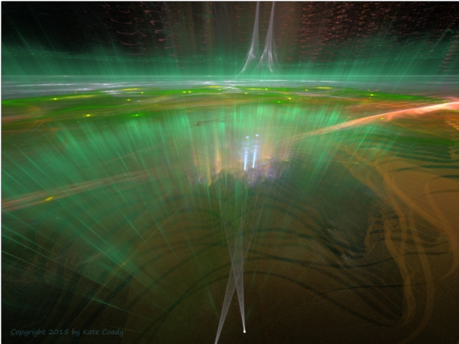

Heaven Sent (Part 1)
by
Gregg Marchese
When the Kronologers announced that the number of years until the final failure of the Earth Current and destruction of the Great Redoubt (though not yet of all human life) had dropped under one million, the great furor that some had suspected might ensue did not happen. Instead, there was a subdued ambiance throughout the Four Hundred and Eighty Cities, a quiet acceptance that, while still a great time off, the End of Humanity's Last Refuge was looming closer in the dark, even as the Watchers had crept closer through the Eons. And the long-accepted mandate that now the count of years would reverse and tally, not up from the Last Sunset, but down to the Final Fall, went into effect.
Many people went to the Halls of Honour and stood silently beholding the shrines and statues of the ancients, thinking of the enormous Second History of mankind since Night had prevailed upon the Earth. And they marveled at those great millions of years, and went away somberly, knowing that, as the Foretellers had seen through so many ages and as the New Foretellers now concurred, the end was inevitable: and, in the vast scale of time they contemplated, imminent.
Some others, mostly among the Scholars and Youth Leagues, thought of the First History, now confirmed by many memory-dreams and accepted as fact, when the strange Sun had shone through the aether. They wondered in awe at that further span of long-lost but now mostly-remembered time that humans had been upon the Earth.
But most of the people lingered at two shrines especially, and gazed silent upon the statues there as they filed along the discolored path made by the shuffling of countless feet on the metal floor. And if they felt any contentment in their quiet distress, it was at the attainments and courage of the humans honoured in those shrines.
The first statue was a great warrior in torn and battered armour, carrying a slim swooning maid in his arms. The man's name was not known, for it was thought in his humbleness he did not wish for notoriety, and so the Scholars honoured him by leaving him nameless. The maid's name, however, is well known, for she is Naani, only survivor of the Lesser Redoubt, which fell to the Monsters and Evil Influences of the Night Land some four million years ago. Once safe in the Great Redoubt, Naani and her anonymous rescuer ultimately spawned fifty ordained lineages, with many offshoots (some legitimate, some not) whose blood, though at first thought deficient, gradually birthed the heightened powers of the New Foretellers, the vast increases in Night Hearing and memory-dreams, and—as some Monstruwacans would sourly attest—the dreamy impulsiveness and foolish optimism of the Youth Leagues. And most remembered that Naani, swooning maid in the statue, was also the Spirit of Mirdath, unutterably ancient noblewoman and eternal companion to the warrior.
The other shrine where the people lingered was that of Perithoös and Telemachos. Here was the graven idol of a young man, weaponless and armourless but for greaves and vambraces, carrying another wounded man on his back. The wounded man's arm dangled, torn off at the elbow, and a bandage was across his eyes. But the hale man's head was lifted, eyes looking up with an expression of hope or relief or exhausted joy upon his face, as if he was looking at some final salvation. Many treatises had been written to explain the expression on the statue's face, and most proclaimed it as the moment when Telemachos saw the lights of the Great Redoubt shining across the Night Land on the last leg of his arduous journey back from the ruins of the city of Usire. Others thought it might be the moment when the Star Ray again speared down through the Dark above, and warded the two heroes from the spells of the House of Silence. And some few wondered if the expression on Telemachos's face is due to what he beheld when, in his circumnavigation of the House of Silence, he glanced West toward the soft effulgence of the green luminous mist. Of these few, one even speculated that Telemachos might have caught a glimpse of the beloved Sun.
And so, soothed by the accomplishments of great heroes, which no final doom could unmake, and heartened by the strong spirit dwelling in the human breast, that can survive direct contact with Watchers and Evil Influences, the people filed away from the shrines and returned to their lives. And for a while it seemed that nothing much had changed.
From the seven-mile height of the peak of the Pyramid the Tower of Observation stood another full mile up into the Night. Its upper half had been abandoned three hundred thousand years ago, after the Giants had contrived a strange siege engine that launched a winged missile which struck the midst of the Tower, cutting off the channels of Earth Current to the upper reaches. But the Great Spy Glass had been salvaged and brought to the lower half of the Tower, where it was mostly reassembled—though regrettably the number of oculuses was reduced, and their resolution and range were less.
Here, in the chamber of the Great Spy Glass, Dione, Master Monstruwacan, peered through a myopic oculus, comparing the location of the left upper lip on the face of the South Watcher with an image on a view table of the same lip exactly one century earlier. Even allowing for the point six metrons the Monster had loomed closer, the lip seemed to have lifted noticeably; though what was noticeable to a Monstruwacan, especially the Master, was not visible to an average citizen.
Dione suppressed a sigh. She was convinced that this was the beginning of the sneer the New Foretellers had seen in their visions, a grimace that would stretch across the face of the South Watcher just before it crashed its paw through the Great Gate five hundred thousand years from now. She made a note in the margin of the view table, but hesitated before launching it into the aether where anyone with a table could read it or the Sensitives in each city could receive it and announce it to their populations.
The Master lowered her finger. The announcement of the Kronologers the week before had been dour news enough. Dione did not wish to further sink the depressed mood of the populace with this confirmation of their doom. She doubted that reminding them of an associated New Foretelling, the vision of a slender strand of white light that would arise and forestall the Watcher from stamping through the rest of the Redoubt for another half-million years, would engender much hope.
She glanced around the chamber. Other Monstruwacans peered through other oculuses, made notes on view tables, spoke with the Scholar Advisors who moved throughout, or consulted with the New Foretellers standing humbly near the walls, hands hidden in the sleeves of their white robes, the encircled red cross bold upon their breasts. A symbol with too many meanings now, Dione knew.
One of these New Foretellers was looking at her, calmly expectant. She composed herself and went over to him. Looking into the strangely smooth face—though Dione knew he had well over a hundred years of life—she nodded slightly and smiled. "We need not dissemble, Koniopses," Dione said. "You know what my Century Scan has revealed."
Koniopses's bland expression brightened the merest fraction, something it took most of the Master's powers of observation to detect. "The knowing of the New Foretellers is both comforting and uncomfortable," the Foremost Foreteller said in his thin voice. "It is not confirmation we seek here. It is concurrence."
"Then we concur," Dione said. "The sneer has indeed begun."
The briefest flick of the Foremost's eyes toward the Master's viewtable revealed his thoughts. "I could not issue the announcement yet," Dione said, and turning, drawing Koniopses at her side, walked to the old breathing bell in the center of the room. She absently stroked her hand along the smooth curve of the bronze-like tube. These airways had not been needed for over two million years, since the lungs of the Monstruwacans had evolved to extract more oxygen from the air here, and since that air had grown denser through the ages.
Dione engaged her brain-elements and spoke directly to the Foremost's mind. One of the meanings for the symbol you New Foretellers wear on your breasts is compassion. I felt compassion's weight upon my heart as I was about to launch the announcement through the aether.
Koniopses's head inclined a tiny metron, bold acknowledgement from him. As acceptance of mortality brings compassion, he sent back, so compassion brings wisdom. Though we New Foretellers keep a strict adherence to timing, we do not ask that others do also. It may be well that you have delayed the announcement.
The Master felt another presence in her mind, and she and the Foremost both turned to see Mett, Scholar Supreme, and his protégé, Scholar Potentate Nemia, approaching. Mett, ever over-dramatic, swept off his black hood in the moment when he stepped into the light from an overhead arc-lamp, revealing his bald head. Nemia was more circumspect in doffing her hood, but obviously proud to display the long jet braids that dangled down her chest, clear sign of her descent from Naani.
The Master and the Foremost opened their thoughts to include Scholar Supreme Mett, though Dione kept hers closed at first to Nemia. The Scholar Potentate had a right to attend in the Tower due to superior research achievements, but Nemia was not necessarily to be admitted to these private councils among the Redoubt Archons. So when Dione noticed that Koniopses had opened his mind to the Scholar Potentate as well, she sent him a wordless query. ?
This too we Foretellers have seen, Koniopses sent back. She is to succeed Mett as Supreme. And soon.
And I, Mett sent, leaning insouciant upon the breathing bell and smiling, am to go forth into the Night Land and be lost beyond the Place of the Ab-humans. He turned his bright smile and the gleaming arch of his forehead at the other three in turn, needlessly emphasizing the absurdity of the statement.
The Master directed her glare, and the sendings of her brain-elements, at Supreme Scholar Mett alone. Impossible. Those who have learned the secrets of the Monstruwacans are forbidden to venture into the Night Land.
Directing her thoughts to the Foremost, but allowing the others—including Nemia now—to hear, Dione sent, So you keep a strict adherence to timing? There is more you New Foretellers have seen, and spoken of with the Scholars. And when were you planning to tell your new visions to the Monstruwacans?
Scholar Potentate Nemia replied, respectful yet not submissive. We did not want to distract you so close to the Century Scan, Master. We agreed that after, depending on the results—
We! thought Dione. Meaning a coalition of Scholars and New Foretellers. She glared at Mett and Koniopses. These are not good times for petty alliances. We must have open trust among our three factions.
The New Foretellers are patient, sent Koniopses. And we had foreseen the results of the Scan. We but awaited the concurrence.
And my research— Nemia began.
But Dione cut her off. Your research is well known. The compilation of Old Foreteller records, and their comparison with New Foretellings, was enough to place you as the Scholar Potentate, but it is not sufficient to justify withholding new visions from the Monstruwacans. You—
Dione knew her thoughts were becoming accusative, and she withdrew, disengaging her brain-elements. She actually sought a brief breath from the anachronistic breathing bell, and in her private thoughts asked herself, Why do I feel threatened by this young Scholar? Could it be envy of that glorious black hair? No. I too am scion of Naani. More the impulsiveness and unpredictability those wild genes express, that have not yet been disciplined in her. Like the Youth Leagues. She is a brilliant Scholar though.
Dione reviewed what she knew of Nemia's work. The young Scholar had searched tirelessly through the accessible Libraries of the Four Hundred and Eighty Cities, sifting countless ancient records, even enlisting the help of Current Teks and Power Proctors to re-energize fading view tables and sort through their stored images. Then, using ancient maps that showed the locations of long-abandoned Libraries, she had organized an expedition to the Lost Cities. Wearing Grey Armour and special cloaks designed to preserve their body heat against the bitter cold, and surrounded by warriors of her own Youth League and their Mentors bearing diskoi, she had descended the energized and relatively safe core conduits that still connected the Upper Cities with the Underground Fields. The expedition then braved the terror of the deserted Lost Cities to enter two abandoned Libraries, including the Library-of-Ages-Yet-To-Be, and return with key records of the Old Foretellers, most notably the fabled Sibylline Book.
The cost had been four members of the Youth League slaughtered by a feral Night Hound, which had actually been kept as a pet by some former citizen of the Lost Cities. Four Mentors had intervened and slain the beast with their diskoi, though two were mauled to death in the effort. And since returning, twelve of the expedition had died in their sleep, victims, according to the Oneiromancers, of still-unidentified dream geases.
And that is why I fear Nemia, the Master thought. She is more courageous—and more reckless—than Mett. The potential for foolishness grows greater as our end looms near. And if— She glanced at Koniopses the Foremost Foreteller —when she becomes Supreme Scholar, many others may follow that recklessness.
She peered openly at Mett then. Especially if, as apparently the most recent Foretellings reveal, the current Supreme is to venture into the Night Land. Looking at his cocky and disdainful posture, his insouciant expression, the thin shoulders but puffed chest supporting his gleaming head, and knowing his preference for contemplation and comfort, Dione could not conceive how such a Foretelling could come to be.
Dione re-engaged her brain elements and returned to the conversation. The others had remained respectfully silent in the interim, though the Master wondered which of them had the power to read her thoughts. And in those thoughts was the beginning of a belief that Nemia might make a valuable and powerful ally when she became Supreme Scholar. I am of course distressed by the results of the Scan, she sent so all could receive, though looking at Nemia, but need not direct that at one so young. Then glaring at Koniopses: And concerned too at these new visions I have yet to be told of.
Nemia bowed her head, long black braids swaying, and sent a wordless surge of acceptance, forgiveness and understanding. That too was something the Naani genes had bestowed. Mett pressed his wide mouth together and emptied his mind entirely. Koniopses gave no detectable response.
Then to all of them, the Master Monstruwacan sent, I will expect a full report of the latest New Foretellings, and summaries— She peered at Mett, knowing his tendency to over-elaborate --of the Scholars' interpretations and comparisons. I myself will wait one more week before making public the results of the Century Scan. She did not need to send that they all were sworn to secrecy until she made the official announcement.
Nemia blinked and nodded acceptance, Koniopses changed his expression so subtly the Master could not read it, and turned to glide away, but Mett's faint grin became a smirk. "Allow me to offer one summary now," the Scholar Supreme said aloud. "There is reason to believe that the Powers for Good have grown recently stronger, and the Night Land is not so dangerous as it was." As he turned away and swept his hood over his head, the flash of a shadow made his smirk look like a sneer.
Days later, when Dione finished reading the latest New Foretellings, her thought was that Koniopses was deliberately testing the limits of her belief. Children? Women? Elders? Whole families? Without armour or weapons, and obviously unPrepared! No more strange and horrific peregrination could she have imagined, shuffling along the Road Where the Silent Ones Walk. For the ancient Law still held, more stern than ever, that allowed only men, of at least twenty-two years of age, of sound mind and body, with no knowledge of the secrets of the Monstruwacans, and thoroughly and carefully Prepared, to venture into the Night Land.
Next the report spoke of a small band of Silent Ones drifting along the Road, tall grey forms slipping below the House of Silence toward the West and that pitiful peregrination. Then a pack of Night Hounds, loping down toward the Road, great fangs slavering and slit-eyes blazing crimson. And a team of Giants, trundling some huge weapon, cocking and loading the immense throwing arm. And hordes of Ab-Humans, humanoid beings with out-sized hands and feet, sickly pink gnarled skin, and misshapen skulls, swarming beside the Road and threatening the cringing people...
The Master Monstruwacan would have demanded explanation from Koniopses at once, but her whirling sight crossed her wood-edged view table and saw the interpretation summary from the Scholars. Disengaging her brain elements, Dione re-established the mental discipline of millennial patience and objectivity required of all Monstruwacans, and opened the crystal document.
The old man shuffled down the service corridor outside the four-hundred and thirteenth city, gently sweeping the air with a static collector he waved in his hand. Occasionally he stopped to trigger the release that sucked the accumulated dust through a tube into the charged receptacle he carried on his back. He had long since lost his fear at the thought of carrying such a concentration of Malign Pollen so near his heart. His had always been a calm and stable personality, of ancient commoner lineages never tainted with the blood of Naani. No such noble blood would ever notice a man of his station anyway. For generations his family had worked in the Reclamation Guild, cleaning, polishing, sweeping, dusting, or tending the Regenerators that took the accumulated dust and detritus and morphed it into useable materials for the Redoubt.
This Malign Pollen he collected now could never be reused, the old man knew. Too potent. That these stray spores of tiny dust could get past the great Air Clog below, and even in such small concentrations influence the dreams of the citizens of the Redoubt, spoke to their power. They were thought by the Monstruwacans to drift in from the Blossoms of Beautific Evil, organisms that had sprung up eleven thousand years ago near the Plane of Blue Fire, which perhaps nourished them as the ancient Sun had nourished more benign blooms. (The old man knew this, and many other speculations of the Monstruwacans and other Redoubt Guilds, because he was a devotee of the Hour Slips, as they were still called, that flew through the aether. He had his own view table to read them, heirloom of his ancestors.) The best that could be done was to contain the Pollen behind charged barriers, vats similar to but much larger than the one he carried on his back, surrounded with a local Air Clog that contained even the evil emanations that could seep into people's dreams.
His was a life shortened by proximity to contaminants from the Night Land, but it seemed long to him now, and in all that time the old man had never had a nightmare. His psyche was buttressed by generations of exposure and toughened by the Reclamation Guild's sub-culture of stability and devotion to Pyramid tradition.
So he was merely intrigued when, approaching the end of the corridor where a side vault let into one of the lowest embrasures still open in the Pyramid, he felt an Influence drawing him through the doorway. It nowise had the Evil taint he had become so inured to, but a gentle, benign presence like a soft breeze that encouraged the feather of his soul to turn. As he drifted into the embrasure, he let himself be drawn, as a child is drawn to a kind face, toward the crystal window where a distant green shine showed to his dark-adapted eyes. That stable, long-experienced and cautious part of his soul wondered if this could be a deception, an enticing Sending meant to mislead him into opening the Redoubt to horror, or draw him out into the Night Land where he could be devoured, body and soul. But that same experienced part of him doubted it. He had tasted many such Sendings, and this had an entirely different flavor. He allowed himself to be led to the West end of this North-West embrasure, and gaze out.
His eyes were drawn to the West, even though closer and more prominent features loomed, like the Watcher of the North-West to his right, silhouetted by the Red Pit that smoldered behind it, from which stretched the Red Tether that hooked the Watcher's rear ankle. Or the Plane of Blue Fire even farther right, edged with the dark waving shapes the discussions in the aether speculated must be the Blossoms of Beautific Evil. But no, his eyes were drawn West, along The Road Where the Silent Ones Walk, past the Place Where the Silent Ones Kill, beyond even the Place of the Ab-humans, to a green luminous mist that glowed softly there.
And that was its name, he knew, though never in any ancient document or view table record had it been capitalized. Some had speculated that beyond that glowing mist was an escape from this world into another world of light and safety and freedom. Foolish dreams of the unutterably ancient myth of heaven, most thought it.
Some fools are merely recipients of other wisdom.
The old man was intrigued by this clear voice speaking in his mind. Was this like the Night Hearing so many of the people had now (though it had not arisen in him and his kin)? How could he know? Again that ancient part of his soul told him this voice would do him no harm, even as it told him that the Oneiromancers and Monstruwacans would doubt and subject him to intrusive tests if they should find out he heard it.
His eyes were filled with soft green effulgence, as his ears were filled with the voice. You, whose blood is pure with the currents of eld, whose mind is steadfast against Evil Influence, whose heart is calm and soothed by wise tradition, and whose soul is unamazed, will you be our emissary? Will you present the message we have finally grown strong enough to send? Salvation awaits.
For a long while his eyes gazed out across the Night Land, between the Deep Valley and the looming bulk of the North-West Watcher, through the Place Where the Silent Ones Kill, along that short stretch of Road Where the Silent Ones Walk, beyond the Place of the Ab-humans, and into the gentle glow of the green luminous mist. His thoughts turned. That this Influence would ask, and not demand— But the forces of the Night Land could be so subtle and cunning— But he was a man of tradition and duty, and after a time he could not measure he calmly and with a sad reverence accepted the offer. The Influence seemed to lessen then, and he turned to bring his dust to the containment vats. He sensed the Influence still within him though, like something that had always been companion to his soul and had only now emerged to join him openly. It conferred upon him a new tradition and duty .
© 2010 by Gregg Marchese.
Image © 2015 by Kate Coady.